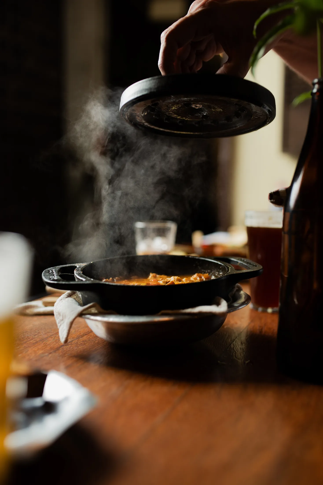
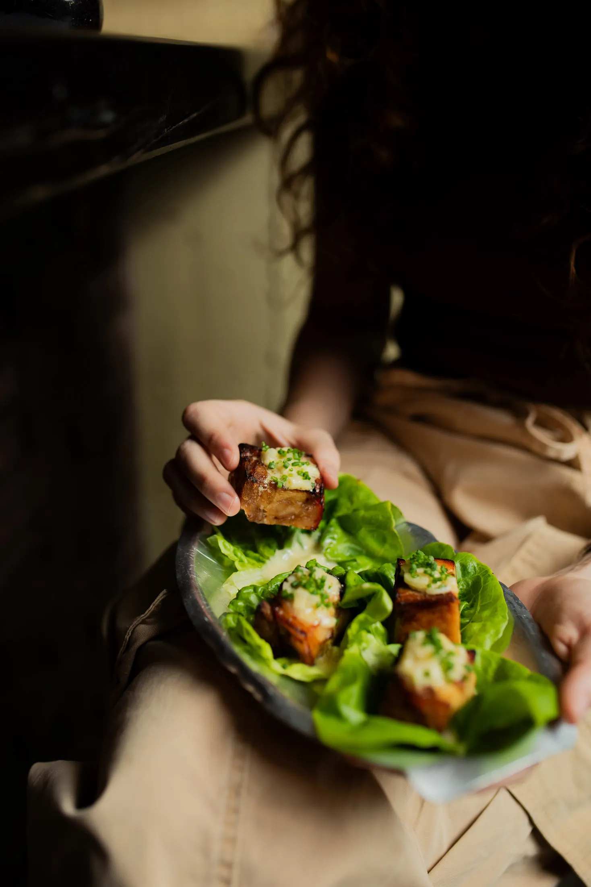
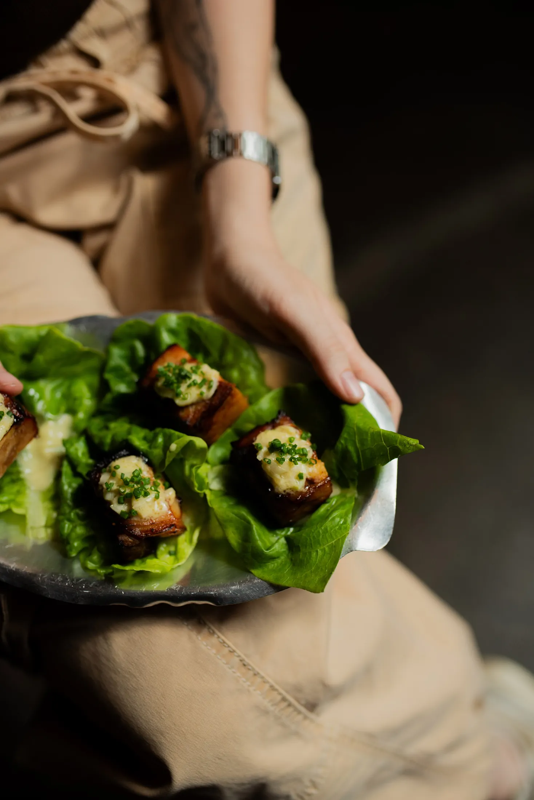
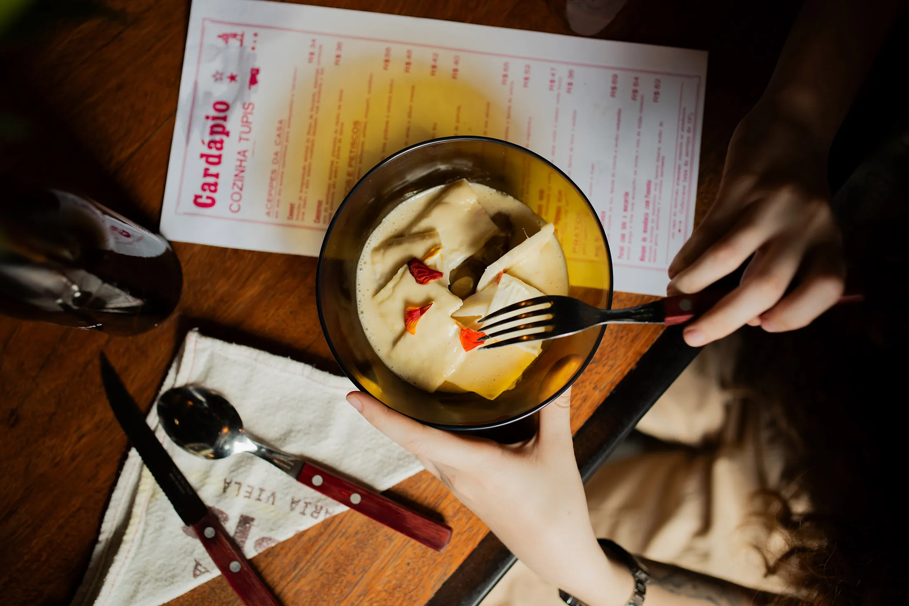
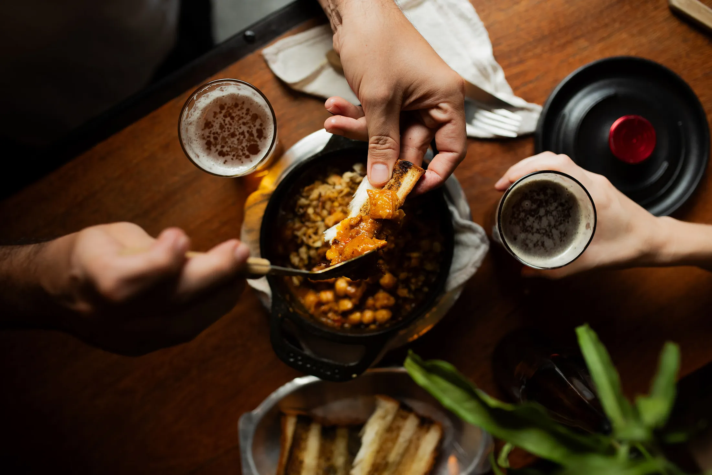

gastronomia · 2024
Cozinha Tupis
brigada, servico e prato. 5 imagens organizadas em um ensaio completo, com entrada direta para contato e leitura clara do projeto.





brigada, servico e prato. 5 imagens organizadas em um ensaio completo, com entrada direta para contato e leitura clara do projeto.




